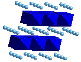

Advanced batteries are a growing $40-billion-a-year business which substantially impacts the areas of energy storage, energy efficiency, and advanced vehicles. Lightweight rechargeable Li-ion batteries are an attractive long-term technology that offers the promise of higherenergy densities than are currently available. The performance of these batteries is significantly impacted by the properties of the cathode materials, such as the intensively studied LiCoO2 oxide.
LiCoO2 forms (among other structures – see below) a layered structure in which the Li and Co cations sit in the octahedral sites of a nearly ideal fcc sublattice of oxygen atoms (Fig. 1). Other synthesized forms of LiCoO2 also involve this octahedral sublattice of cations in the close-packed oxygen network, but with differing cation arrangements. Upon charging the LiCoO2 battery cathode, Li is deintercalated out of these structures, leaving behind vacancies (denoted *) which can be positioned in different lattice locations, forming a delithiated LixCoO2 phase. Hence, there are three types of ordering problems which are of interest in this material: (i) Li/Co ordering in LiCoO2 (x=1) leads to the different observed ordered phases and also to disordered Li/Co (rocksalt) at high temperature. (ii) Similarly, */Co ordering in the completely deintercalated * CoO2 (x=0) is also of interest. (iii) The vacancies left behind by Li extraction can form ordered vacancy compounds in partially deintercalated LixCoO2, leading to a */Li ordering problem for intermediate compositions 0<x<1. We refer to the first two of these ordering problems as cation ordering since they occur at fixed composition (either fully intercalated or deintercalated) and deal with the positions of the cations. The third type of ordering we call intercalation ordering since it deals with a fixed CoO2 framework and the ordering may occur upon intercalation or deintercalation of Li as a function of composition.
In a recent series of papers [1-3], we have developed a first-principles theoretical method for treating both cation and intercalation ordering in these battery cathode materials. The approach also allows one to predict the voltages of various ordered and disordered LixCoO2 cells, and hence to examine theoretically the electrochemical properties of battery cells from a quantum-mechanical approach. The first-principles nature of the method not only allows for a detailed understanding of the underlying physics of the intercalation processes, but also allows one to reliably investigate properties of as-yet-unsynthesized materials, and hence make predictions about new materials. The use of such a computational approach in Li battery design without the need for experimental input should greatly accelerate the discovery of new classes of battery materials.
In intercalation systems such as Li in graphite, hydrogen in metals, and alkali-metals in transition metal dichalcogenides, the ``guest'' atom occupies certain ``host'' sites preferentially at low temperatures while others remain empty. Due to this specificity of the interactions between the guest atoms and the intercalation lattice sites, a wide variety of intercalated structures can form, including ``ordered vacancy compounds''. Ordered vacancy compounds of intercalated Li atoms have been observed in several layered lithium-transition metal dichalcogenides such as LixTiS2, LixTaS2, and LixCoO2. Above a critical temperature, these long-range ordered structures undergo an order-disorder transition into a phase where the vacancies are distributed in a disordered fashion on the intercalation sites. Vacancy ordering in LixCoO2 occurs on the Li sublattice which forms close-packed (111) planes yielding a two-dimensional triangular lattice. These Li-vacancy intercalation planes are stacked along <111> in a rhombohedral fashion (ABC). To study the intercalation ordering in LixCoO2, we use a cluster expansion approach: LAPW total energies are computed for several (16) fully-relaxed ordered vacancy compounds in LixCoO2, formed by removing Li atoms from the LiCoO2 compound for various compositions and arrangements of vacancies. These first-principles energies are then mapped onto a cluster expansion, i.e., an Ising-like Hamiltonian, which contains extended-range pair, triplet, and quadruplet interactions between the substitutional units of the ordering problem (in this case, Li and ?). This cluster expansion is sufficiently accurate to predict the energies of various arrangements of vacancies, but sufficiently simple to evaluate that cells of 100,000 atoms (or more) may be quite easily calculated, and the combination of the cluster expansion with Monte Carlo statistical mechanics simulations affords the possibility of studying finite temperature properties.
For a LixCoO2/Li cell at temperature T, the voltage V(x) as a function of Li composition is given by the Li chemical potential difference between cathode (LixCoO2) and anode (Li metal):
-eV(x,T) = mLi(LixCoO2,T)- mLi(Li metal,T) (1)
Using a static, bulk description, the chemical potential of Li metal is a constant reference energy and is independent of T. Thus, computing the voltage of Eq. (1) amounts to computing the chemical potential mLi(LixCoO2,T) relative to the reference of Li metal. We have computed this chemical potential as a function of Li content and temperature from grand canonical (i.e., fixed chemical potential) Monte Carlo simulations of a LixCoO2 cluster expansion at finite T. [3] This provides a completely parameter-free, first-principles prediction of the Li intercalation voltage of the LixCoO2/Li cell as a function of Li content. The predicted intercalation voltage profiles for zero- and finite temperatures are shown in Fig. 2. The first-principles calculations of electrochemical voltage agree well with measured data: Measured voltage profiles show an average voltage of around 4.0-4.2 V, while our first-principles predictions show an average of 3.8 V.
The voltage profiles also contain information about the phase stability of the ordered vacancy compounds: Two-phase regions, defined in terms of free energies vs. x by tie-lines connecting the two phases, correspond to plateaus in the voltage profiles. Likewise, the voltage drops are associated with single phase, ordered regions. As the temperature is increased, drops become more rounded and disappear at order-disorder transitions. The voltage profile of the solid solution phase is completely smooth with no discontinuous voltage drops. By carefully examining the voltage profiles as a function of composition, the entire voltage-temperature phase diagram may be mapped out (Fig. 3). From this predicted phase diagram, we see that a large number of ordered vacancy compounds are stable at low temperature, however, as the temperature is raised, many of these phases undergo order-disorder reactions, and thus do not survive to room temperature. At 300 K, we predict that three ordered vacancy phases should remain stable: The predicted "2x1" phase has been observed in electrochemical and x-ray diffraction experiments, while the two Ö3x Ö3 phases are predictions awaiting experimental verification.
Our calculations also provide insight into the remarkable stability of this material to Li-vacancies: The stoichiometric ordered layered LiCoO2 compound is an insulator in LDA, but Li moves the Fermi level into the valence band, turning the system (in LDA) to a metal. The classic inorganic-chemistry view of this reaction is that the Co ion absorbs the charge change: it changes its oxidation state from Co3+ in LiCoO2 to Co4+ in * CoO2. Considering the large (Mott-Hubbard) Coulomb energy of an unhybridized transition metal ion, such a change in oxidation state would be accompanied by substantial modification of the energy level structure of LiCoO2, which is not observed in our self-consistent calculations. Instead, we find that the charge enclosed around the Co site is surprisingly constant (7.36±0.04 valence electrons inside a radius of 1.06Å) for all configurations, as the Li content is reduced from x=1 to x=0. Figure 4 shows the charge rearrangements due to complete [r(LiCoO2)-r(* CoO2)] and partial [r(Li0.5CoO2)- r(* CoO2)] Li removal, assuming the same lattice parameters and atomic positions (those of relaxed LiCoO2) for all structures. The calculated charge density demonstrates that as electronic charge is removed from the compound (via Li extraction), the oxygen-cobalt hybridization changes, so as to maintain a nearly constant charge (hence, nearly unchanged energy levels) around the Co site. This "self-regulating response" (minimizing the effect of external perturbations via rehybridization) is characteristic of systems having localized d states that communicate with a covalent manifold, e.g., transition-atom impurities in semiconductors. It explains in such systems why the d-like energy levels do not shift significantly in response to large nominal changes in charge, and thus at least partly explains the "defect tolerance" of these structures over a large range of Li concentrations.
The material LiCoO2 (x=1) has been synthesized in two ordered forms: The commonly observed layered form (Fig. 1) discussed above, and a cubic form which has been produced by solution growth at low temperatures. The layered and cubic forms are extremely similar in terms of cation coordination sequence: Pair and three-body correlations are equivalent, with the first difference between the two occurring at the four-body correlation. Thus, one would expect the two forms of LiCoO2 to exhibit similar energies and electrochemical potentials. However, electrochemical properties of the two compounds are very different: The cubic phase has a nearly flat low voltage plateau at 3.6 V, (for 0.5< x < 1) which contrasts with the high voltage profile of the layered phase which takes place near (or above) 4 V and has many voltage drops and plateaus. This distinction is initially difficult to understand given the structural similarity between the two, and the expected similar stability. By performing total energy calculations of these two parent structures and deintercalated products of them, we have found [2] the origin of the electrochemical differences between these two phases: Upon removal of Li from the cubic phase, the Li atoms move from their original octahedral positions to energetically favored tetrahedral sites and form the low-energy normal spinel compound, LiCo2O4. The low energy of this spinel compound divides the voltage of the cubic phase into a low voltage plateau (for 0.5 < x < 1) and a high voltage region (for 0.0 < x < 0.5). Although no experiments have succeeded in deintercalating the LiCo2O4 spinel, our calculations demonstrate that Li extraction from this material should occur near 5V, thus providing a theoretical prediction of an as-yet-unsynthesized high voltage cathode material. Experiments to form and delithiate this spinel phase are currently underway. This prediction provides a clear example of how this first-principles approach should aid in the discovery of new and better battery materials while at the same time, elucidate the basic physics behind the electronic and structural processes of intercalation in these materials.
C. Wolverton and A. Zunger, "Cation- and Vacancy-Ordering in LixCoO2" Phys. Rev. B 57, 2242 (1998).
C. Wolverton and A. Zunger, "Prediction of Li Intercalation and Battery Voltages in Cubic and Layered LixCoO2" J. Electrochem. Soc. 145, 2424 (1998).
C. Wolverton and A. Zunger, "First-Principles Theory of Vacancy Order-Disorder and Intercalation Battery Voltages in LixCoO2" Phys. Rev. Lett. 81, 606 (1998)
For a listing of all SST references on the topic "Oxides", click on the "Get References" button below.